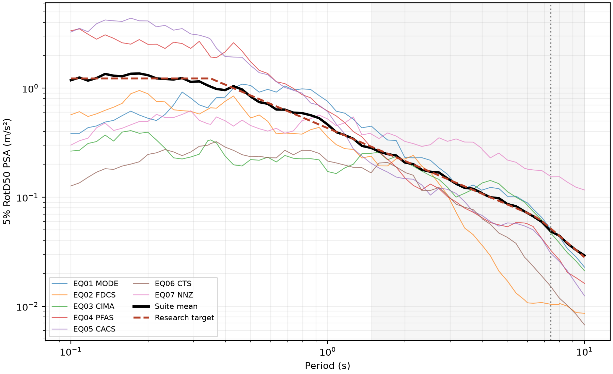
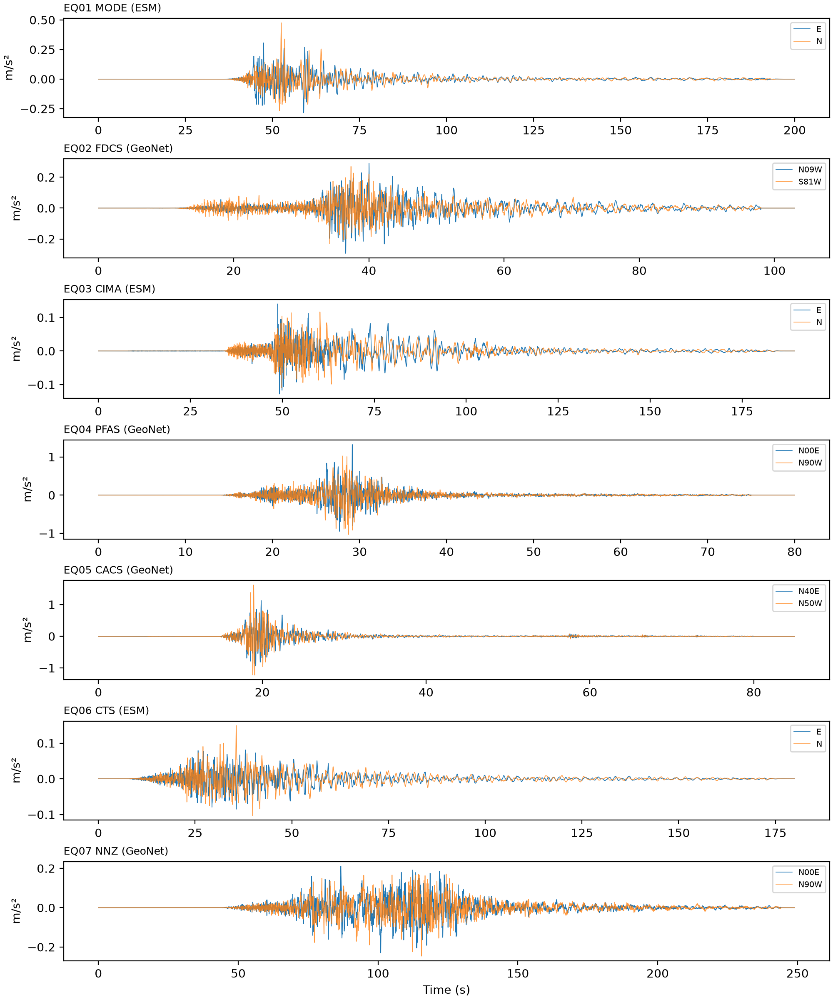

在线查看新版期刊制图（时程、PSD、反应谱）。此波组不代表文献指定七波。
76组候选，29组进入数值匹配，七个不同地震事件。5%阻尼 RotD50，时间步长 0.005 s。参数化研究谱，非实际场址工程抗震认证。
| 编号 | 台站 | 来源 | Mw | dt/s | 调幅 | PGA (m/s²) | 下载 |
|---|---|---|---|---|---|---|---|
| EQ01 | MODE | ESM | 6.1 | 0.005 | 1.1354 | 0.4754 | 下载 ZIP |
| EQ02 | FDCS | GeoNet | 6.19 | 0.005 | 1.5456 | 0.2935 | 下载 ZIP |
| EQ03 | CIMA | ESM | 6.0 | 0.005 | 0.6446 | 0.1402 | 下载 ZIP |
| EQ04 | PFAS | GeoNet | 6.58 | 0.005 | 1.5130 | 1.3261 | 下载 ZIP |
| EQ05 | CACS | GeoNet | 5.63 | 0.005 | 0.8383 | 1.6154 | 下载 ZIP |
| EQ06 | CTS | ESM | 5.9 | 0.005 | 1.1382 | 0.1493 | 下载 ZIP |
| EQ07 | NNZ | GeoNet | 7.85 | 0.005 | 1.1114 | 0.2465 | 下载 ZIP |


完整包包含原始提供方文件、未调幅和调幅时程、谱及来源记录。时程列：time_s、H1_m_s2、H2_m_s2，两个水平分量统一调幅。研究谱0.1–10 s，重点1.47874–10 s。个别记录有效持续时间不足5T1，作为研究诊断保留，不宣称满足正式工程选波条款。